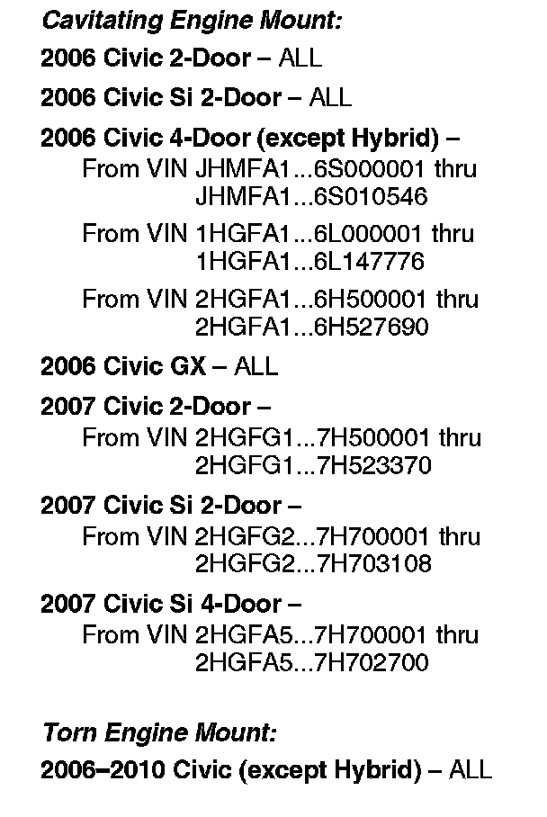
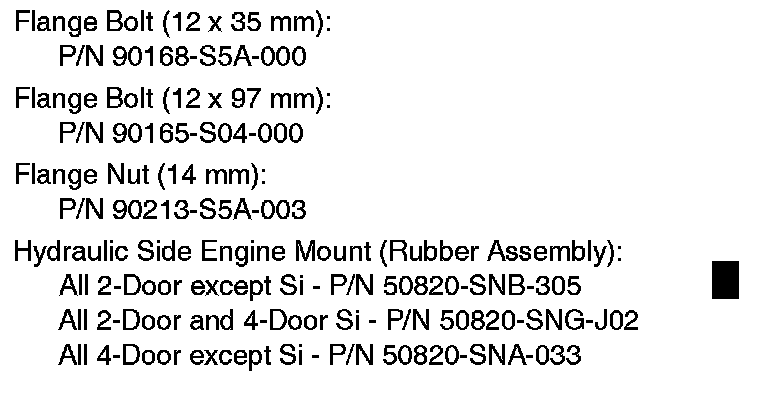
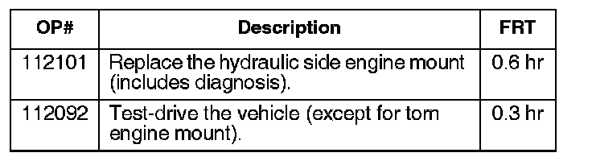
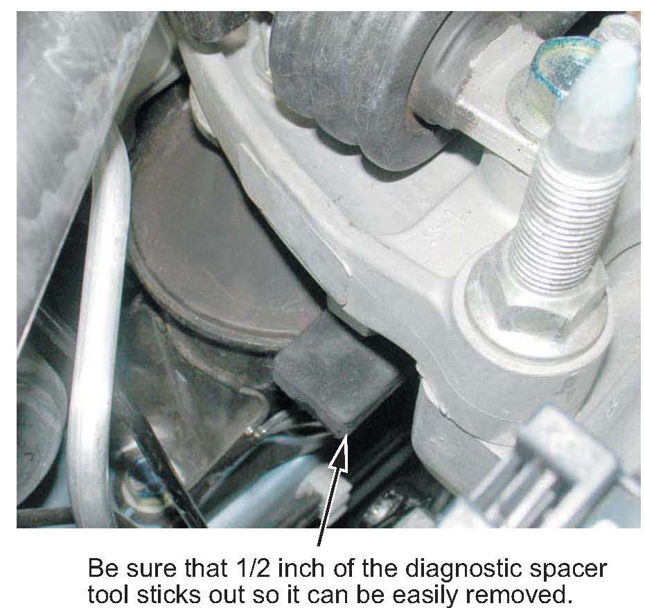
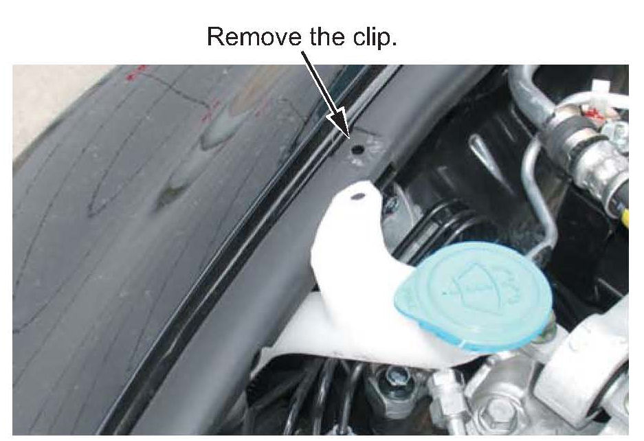
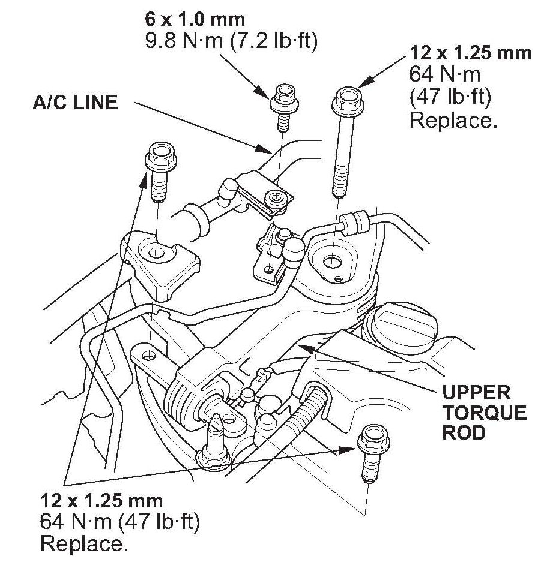
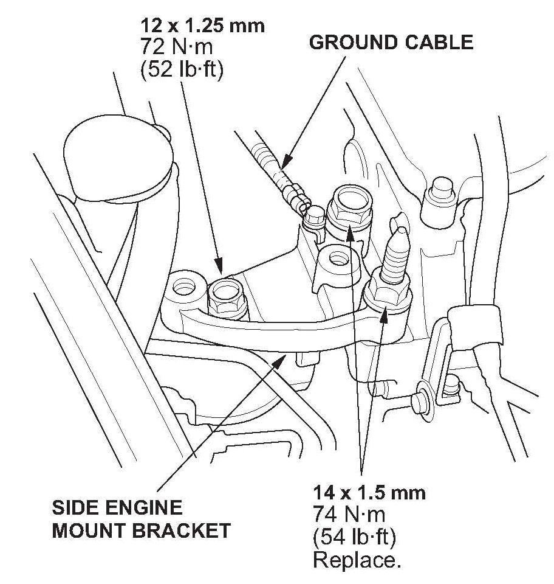
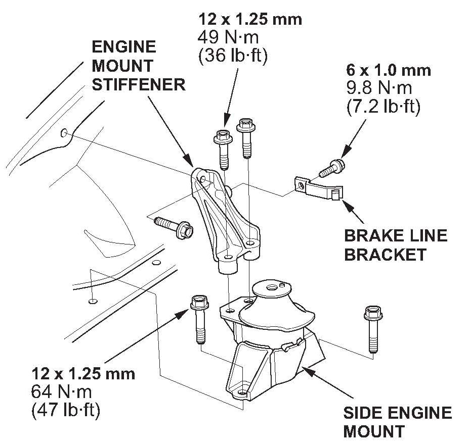

Engine - Rattles From Right Front Of Vehicle
06-060December 24, 2010
Applies To:
See VEHICLES AFFECTED
Rattle or Knock From Right-Front of Vehicle When Driving Over Bumps (Supersedes 06-060, dated September 30, 2010, to revise the information marked by the black bars and asterisks)
REVISION SUMMARY
*Under PARTS INFORMATION, one side engine mount part number was changed.*
SYMPTOM
There is a rattle or a knock coming from the right-front of the vehicle when driving over bumps at 15 to 20 mph (24 to 32 km/h).
PROBABLE CAUSE
The passenger's side hydraulic side engine mount is cavitating and making a rattling sound, or it is torn and making a knocking sound.

VEHICLES AFFECTED
CORRECTIVE ACTION
Replace the side engine mount.

PARTS INFORMATION
TOOL INFORMATION
Diagnostic Spacer:
T/N 07AAJ-SNAA110
WARRANTY CLAIM INFORMATION

The normal warranty applies.
Failed Part: P/N 50820-SNA-023
Defect Code: 00504
Symptom Code: 04217
Skill Level: Repair Technician
DIAGNOSIS
A Civic with the R18A1 engine is shown in the photograph. The diagnosis is the same for all other Civic engine types.
1. Visually inspect the passenger's side engine mount for tearing or leaking.
^ If the engine mount is torn or leaking fluid, go to REPAIR PROCEDURE, no test drive is needed.
^ If the engine mount is not torn or leaking fluid, and the vehicle is within the affected VIN range for a cavitating engine mount, go to step 2.
^ If the engine mount is not torn or leaking fluid, and the vehicle is not within the affected VIN range for a cavitating engine mount, this service bulletin does not apply; proceed with normal troubleshooting.
2. Place a wood block onto a floor jack, and position it under the oil pan at the end closest to the passenger's side engine mount. Raise the engine enough to insert the diagnostic spacer between the side engine mount and the bracket. Be sure to leave the spacer sticking out about 1/2 inch so it can be easily removed. Remove the floor jack.

NOTE:
Installing the diagnostic spacer increases engine vibration at idle.
3. Test-drive the vehicle at the same speed and over the same type of road conditions that the customer says causes the noise.
NOTE:
It is possible the noise can be recreated by driving 15 to 20 mph over a 1-1/2 to 2 inch drop in the road surface.
^ If the rattling is gone with the spacer placed between the side engine mount and the side engine bracket, go to the REPAIR PROCEDURE.
^ If the vehicle still rattles, remove the spacer and continue with normal troubleshooting.
REPAIR PROCEDURE
A Civic with the R18A1 engine is shown in the illustrations for steps 3, 5, and 6. The repair procedure is the same for all other Civic engine types.
1. Place a block of wood onto a floor jack, and position it under the oil pan at the end closest to the engine side mount. Remove the diagnostic spacer.
NOTE:
Adjust the engine height as needed while doing the following steps.

2. On the Si models, remove the clip securing the washer reservoir to the fender and move the reservoir out of the way.

3. Remove the bolt securing the A/C line, then remove the three bolts holding the upper torque rod in place.
NOTE:
Use new flange bolts when reinstalling the upper torque rod.
4. Push the torque rod toward the rear of the vehicle, and rotate it clockwise 90 degrees so that it is out of the way.

5. Remove the middle bolt on top of the side engine mount bracket, the bolt holding the ground cable to the side engine mount bracket, and the bolt and nut holding the side engine mount bracket to the engine block. Remove the side engine mount bracket.

6. Remove the bolt and bracket holding the ABS brake lines to the engine mount stiffener. Remove the two bolts holding the engine mount stiffener to the side engine mount, and the bolt holding the engine mount stiffener to the body. Remove the engine mount stiffener.
7. Remove the two bolts holding the side engine mount to the frame rail.
8. To make it easier to remove the side engine mount, remove the NC bracket bolt so the NC line can be gently pulled out of the way.
9. Remove the side engine mount.
10. Install the new side engine mount (rubber assembly), then reassemble the other parts in reverse order.

Disclaimer